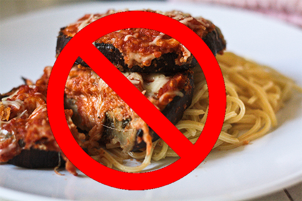

About Parma
This website is dedicated to my love of parma.
Where did Chicken Parma originate from?
Parma is delicious. There is no clear idea where it came from. Some people think it originated from Italy but this isn't exactly true. The original there was eggplant based. It is unclear when it became chicken based. The US have a version served with spaghetti instead of chips. Yuck!

No! No! No! This is wrong! This is not Parma!
A good parma is a thick juicy chicken breast the size of your plate, breaded and deep fried. It should be topped with napoli sauce with a hint of basil, a thin slice of generously sized plain ham that almost covers the whole chicken (not honey, smoked or other flavoured), covered with a bubbling melted combination of tasty cheddar, mozzarella and parmesan cheese.
This should be placed on top of a pile of triple cooked chips (boiled, deep fried and fried again for fluffy inside and crispy not too thick crunch outside), lightly seasoned with sea salt, and a side serving of green mixed salad (rocket, lettuce, cos), cherry tomatoes and sliced cucumber halves, coated with a light drizzling of balsamic vinegarette (olive oil, balsamic vinegar, salt and pepper).
The ideal drink to accompany this magnificent meal - this fantastic feast - is either water, or a good quality ice cold beer.
Chicken Parma is a Melbourne institution. You won't find such good quality or a range of varieties outside of Melbourne so easily.
Fun fact: Other iconic Melbourne foods you won't find easily outside are Dim Sims and Hot Jam Donuts.
Insert more text here based on secondary sources etc
Insert more text here based on secondary sources etc
Bibliography
• Robertson, Luke. 2019. A brief history of the Chicken Parmigiana, Broadsheet. Viewed 19-02-2020. https://www.broadsheet.com.au/national/food-and-drink/article/brief-history-chicken-parmigiana
• Coates, Sally. 2017. Best of the Gold Coast 2017: 9 of the best chicken parmigiana. Gold Coast Bulletin. Viewed 19-02-2020. https://www.goldcoastbulletin.com.au/lifestyle/best-of-gold-coast/best-of-the-gold-coast-2017-9-of-the-best-chicken-parmigiana/news-story/6ec245b4f220aec7e5c1ee1138fdb3fc
• 2015. EGGPLANT PARMESAN. Cook Diary. Viewed 19-02-2020. http://cookdiary.net/eggplant-parmesan/
• Insert more references here used in this website as secondary sources etc
• Insert more references here used in this website as secondary sources etc